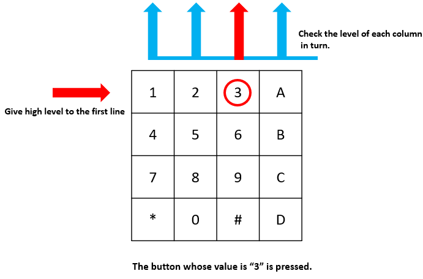

Note
Bonjour, bienvenue dans la communauté SunFounder Raspberry Pi & Arduino & ESP32 sur Facebook ! Plongez plus profondément dans l’univers du Raspberry Pi, Arduino et ESP32 avec d’autres passionnés.
Pourquoi nous rejoindre ?
Assistance d’experts : Résolvez les problèmes après-vente et surmontez les défis techniques avec l’aide de notre communauté et de notre équipe.
Apprenez & Partagez : Échangez des conseils et des tutoriels pour développer vos compétences.
Aperçus exclusifs : Bénéficiez d’un accès anticipé aux annonces de nouveaux produits et à des avant-premières.
Réductions spéciales : Profitez de remises exclusives sur nos derniers produits.
Promotions festives et concours : Participez à des concours et à des promotions spéciales.
👉 Prêt à explorer et à créer avec nous ? Cliquez sur [Ici] et rejoignez-nous dès aujourd’hui !
2.1.5 Clavier matriciel
Introduction
Un clavier matriciel est un ensemble rectangulaire de boutons. Dans ce projet, nous allons l’utiliser pour saisir des caractères.
Composants

Schéma de câblage


Procédures expérimentales
Étape 1 : Construire le circuit.

Étape 2 : Ouvrir le fichier de code.
cd ~/davinci-kit-for-raspberry-pi/nodejs/
Étape 3 : Exécuter.
sudo node keypad.js
Une fois le code exécuté, les valeurs des touches enfoncées sur le clavier (valeur des touches) seront affichées à l’écran.
Code
const Gpio = require('pigpio').Gpio;
var rowsPins = [18,23,24,25];
var colsPins = [10,6,27,17];
var keys = ["1","2","3","A",
"4","5","6","B",
"7","8","9","C",
"*","0","#","D"];
for(let i=0;i<rowsPins.length;i++){
rowsPins[i] = new Gpio(rowsPins[i],{mode: Gpio.OUTPUT})
}
for(let i=0;i<colsPins.length;i++){
colsPins[i] = new Gpio(colsPins[i],{
mode: Gpio.INPUT,
pullUpDown: Gpio.PUD_DOWN,
edge: Gpio.RISING_EDGE
})
}
var last_key_pressed = 0;
var col=-1;
for(let i=0;i<colsPins.length;i++){
colsPins[i].on('interrupt',()=>{
col=i;
pressed_keys=keys[row*colsPins.length+col];
if(last_key_pressed!=pressed_keys){
console.log(`${pressed_keys}`);
}
last_key_pressed = pressed_keys;
});
}
var row=-1;
setInterval(() => {
row=(row+1)%rowsPins.length;
for(let i=0;i<rowsPins.length;i++){
rowsPins[i].digitalWrite(0);
}
rowsPins[row].digitalWrite(1);
}, 10);
Explication du code
const Gpio = require('pigpio').Gpio;
var rowsPins = [18,23,24,25];
var colsPins = [10,6,27,17];
var keys = ["1","2","3","A",
"4","5","6","B",
"7","8","9","C",
"*","0","#","D"];
for(let i=0;i<rowsPins.length;i++){
rowsPins[i] = new Gpio(rowsPins[i],{mode: Gpio.OUTPUT})
}
for(let i=0;i<colsPins.length;i++){
colsPins[i] = new Gpio(colsPins[i],{
mode: Gpio.INPUT,
pullUpDown: Gpio.PUD_DOWN,
edge: Gpio.RISING_EDGE
})
}
Déclarez deux ensembles de broches et une matrice en fonction du style du clavier.
Quatre broches correspondent aux lignes du clavier, définies en mode OUTPUT ; Les quatre autres broches correspondent aux colonnes, définies en mode INPUT, et configurées pour déclencher une interruption sur front montant.
Le principe permettant au microcontrôleur de détecter la touche enfoncée est le suivant : Les quatre broches des lignes fournissent un signal haut à tour de rôle. Si une touche est enfoncée, la broche de colonne correspondante détectera ce signal haut et déclenchera l’interruption de front montant.
Par exemple, si j’appuie sur la touche 3, lorsque les broches des 2e, 3e et 4e lignes envoient un signal haut, il n’y a aucun effet. Lorsque la broche de la première ligne envoie le signal haut, la broche de la 3e colonne détecte le signal et déclenche l’interruption. À ce moment, les broches de la 1re, 2e et 4e colonnes ne déclenchent aucun événement.
Ainsi, le microcontrôleur peut déterminer que la touche enfoncée est en position (1, 3), ce qui correspond à la touche 3.
var row=-1;
setInterval(() => {
row=(row+1)%rowsPins.length;
for(let i=0;i<rowsPins.length;i++){
rowsPins[i].digitalWrite(0);
}
rowsPins[row].digitalWrite(1);
}, 10);
Les quatre broches des lignes sont périodiquement activées en haut, et la variable row est utilisée pour localiser la broche de ligne actuellement activée.
var col=-1;
for(let i=0;i<colsPins.length;i++){
colsPins[i].on('interrupt',()=>{
col=i;
// pressed_keys=keys[row*colsPins.length+col];
// if(last_key_pressed!=pressed_keys){
// console.log(`${pressed_keys}`);
// }
// last_key_pressed = pressed_keys;
});
}
Définissez des fonctions d’interruption pour les quatre broches des colonnes,
et la variable col est utilisée pour identifier les broches de colonne qui déclenchent l’interruption sur front montant.
pressed_keys=keys[row*colsPins.length+col];
if(last_key_pressed!=pressed_keys){
console.log(`${pressed_keys}`);
}
last_key_pressed = pressed_keys;
Ce morceau de code permet de récupérer la valeur spécifique de la touche pressée à partir de la matrice keys selon les valeurs de row et col.
À chaque nouvelle valeur détectée, celle-ci est imprimée.
Image du résultat